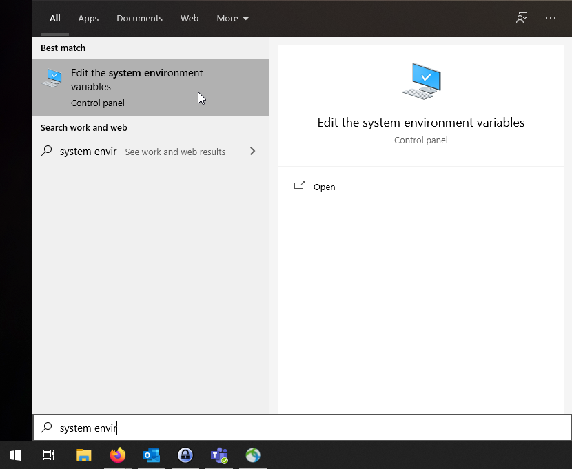
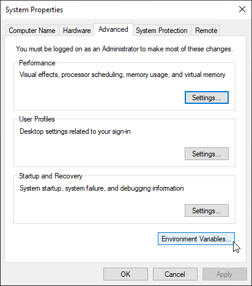
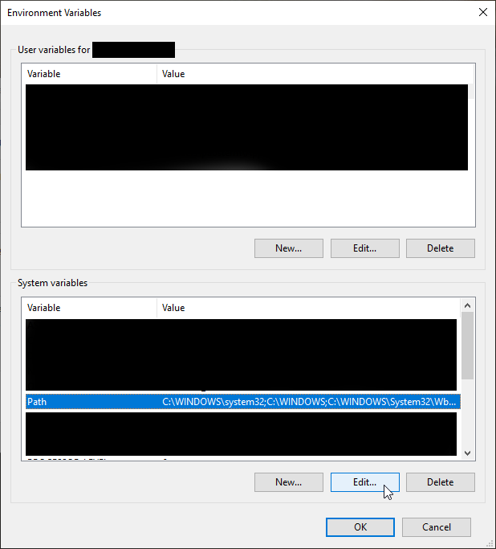
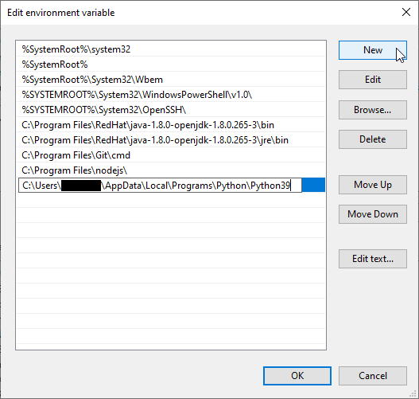

Path-muuttujan muokkaus
Path ympäristömuuttuja
Kirjoittaessasi komennon komentoriville katsoo Windows löytääkö se vastaavaa komentoa sisäisitä komennoista jonka jälkeen se etsii komentoa vastaavaa suoritettavaa tiedostoa ulkoisista komennoista. Ulkoiset komennot ovat käytännössä suoritettavia tiedostoja joiden kansio-polku on lisätty joko järjestelmän tai käyttäjän Path ympäristömuuttujaan.
Haluamme lisätä Pythonin Path-muuttujaan koska muuten esimerkiksi Pythonin suorittamisessa komentoriviltä pitäisi aina kertoa koko polku python.exe tiedostoon:
C:\Users\User\AppData\Local\Programs\Python\Python38\Python --version
Mutta mikäli lisäämme polun Python.exe:n kansioon Pythonia voi kutsua komentoriviltä paljon lyhyemmin kuten alla olevassa esimerkissä.
Python --version
Python sijainti
Edellä mainittu polku on Python asennuksen sijainti Windows 10 käyttäjärjestelmässä kun Pythonin asentaa oletusasetuksilla. Pythonin sijainnin saa selville vaikka hakemalla Windows kännistävalikosta haulla “Python” jolloin löytyy “Python.exe” tai versionumeron sekä bittisyyden kanssa esim. “Python 3.8(32-bit)”.
Oikealla hiirellä klikkaamalla ja omainsuudet(Properties) valitsemalla pitäisi löytyä tiedoston sijainti. Vaihtoehtoisesti voi pitää shift-näppäintä pohjassa klikatessa ja valita “Avaa tiedostosijainti” (Open file location)
Sijainit Windowsilla oletusasetuksilla (versiolle 3.8)
64-bit - C:\Users\User\AppData\Local\Programs\Python\Python38
32-bit - C:\Users\User\AppData\Local\Programs\Python\Python38-32
PATH Ympäristömuuttujan muokkaus
- Käytä Windowsin käynnistä valikon(Start menu) hakua ja etsi “Muokkaa järjestelmän ympäristömuuttujia” (“Edit the system environment variables”).

- Paina avautuvasta valikosta Ympäristömuuttujat(Environment Variables) nappulaa

- Etsi System variables osiosta Path ja paina muokkaa.
Huom: Järjestelmämuuttujat(System variables) ovat saatavilla kaikille koneen käyttäjille, käyttäjämuuttujat ovat taas saatavilla ainoastaan nykyiselle käyttäjälle. Voit halutessasi tehdä muutoksen myös käyttäjän muuttujiin (User variables)

- Tämä näkymä on Windows 10:ssä ja Windows 7:ssa hyvin erillainen.
- Windows 10.
- Tarkista, ettei Python polkua ole jo listattu.
- Lisää polku painamalla new ja liittämällä se muokattavaan kenttään kuvan mukaisesti
- Paina OK molempiin ikkunoihin sulkeaksesi ne ja vahvistaaksesi valinnat.
- Windows 7
- Kopioi ja liitä muuttujan arvo avautuneesta ikkunasta erilliseen tekstieditoriin kuten muistioon(Notepad).
- Polut on eroteltu toisistaan puolipisteellä(;)
- Tarkista ettei Python polkua ole jo lisätty muuttujaan.
- Lisää loppuun puolipiste ja polku python.exe kansioon.
- Kopioi koko teksti editorista ja liitä se muuttujan arvoon.
- Paina OK molempiin ikkunoihin sulkeaksesi ne ja vahvistaaksesi valinnat.
- Windows 10.
